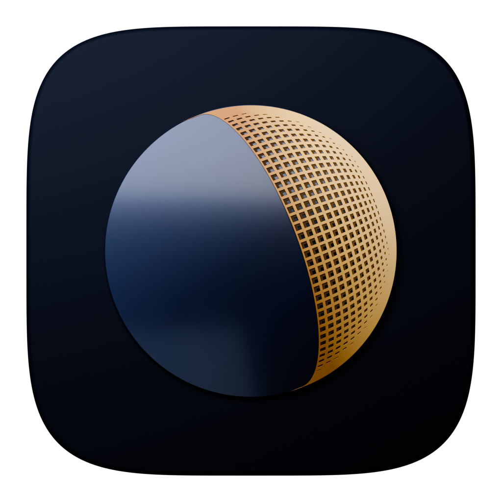
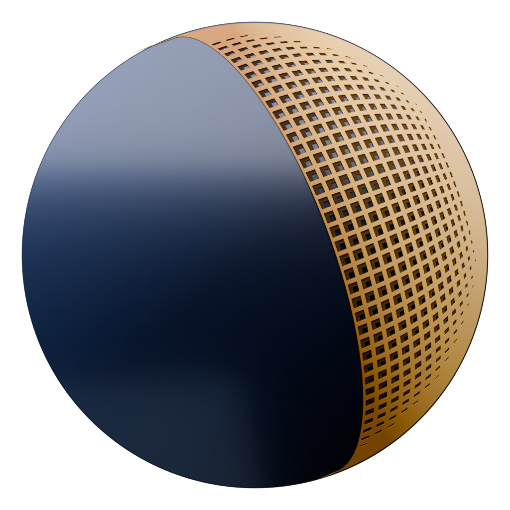
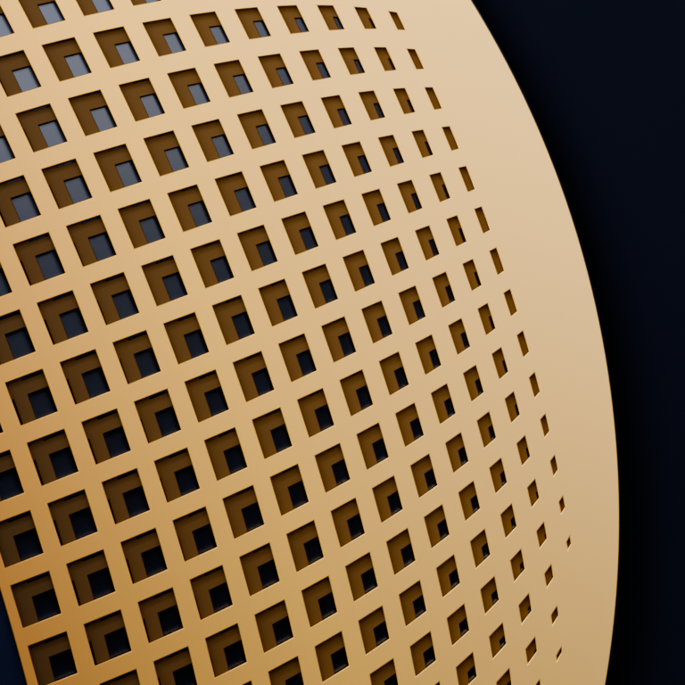
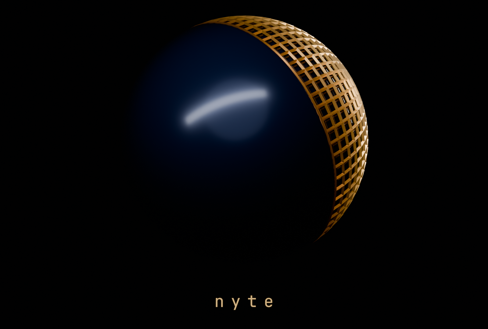

Icon, 1024 px, Cycles. Flat layers on a plate, orthographic camera, one soft key from the upper left.


A waxing crescent, the sun to the right and a little behind, the phase of the ASCII moon. The night side is a glossy graphite-blue disc with a shallow dome and the broad diagonal reflection from the gloss study. The crescent is two thin perforated gold sheets raised a hair above the disc, the way the gloss study layers its screens.
The pores are a latitude/longitude lattice on a sphere with its pole at the sun, projected flat. The terminator is one clean edge, every row of cells is an arc parallel to it, and the cells foreshorten toward the limb into the density gradient the ASCII moon has.

The sphere study in sphere/ built the moon as a true sphere with lattice shells. Too deep and too blocky for a macOS icon, but the sun-aligned lattice idea carried over.
flat-moon.blend · blender-flat-moon.py · README.md · blender-notes.md
Rebuild from the repo root with
/Applications/Blender.app/Contents/MacOS/Blender --background --python
output/brand/nyte-mesh-moon/blender-flat-moon.py.